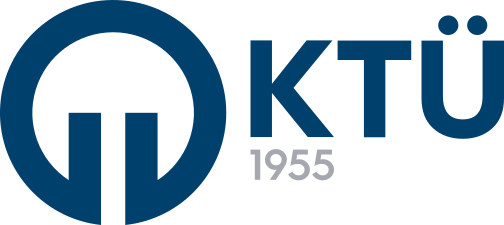
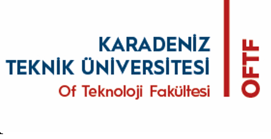
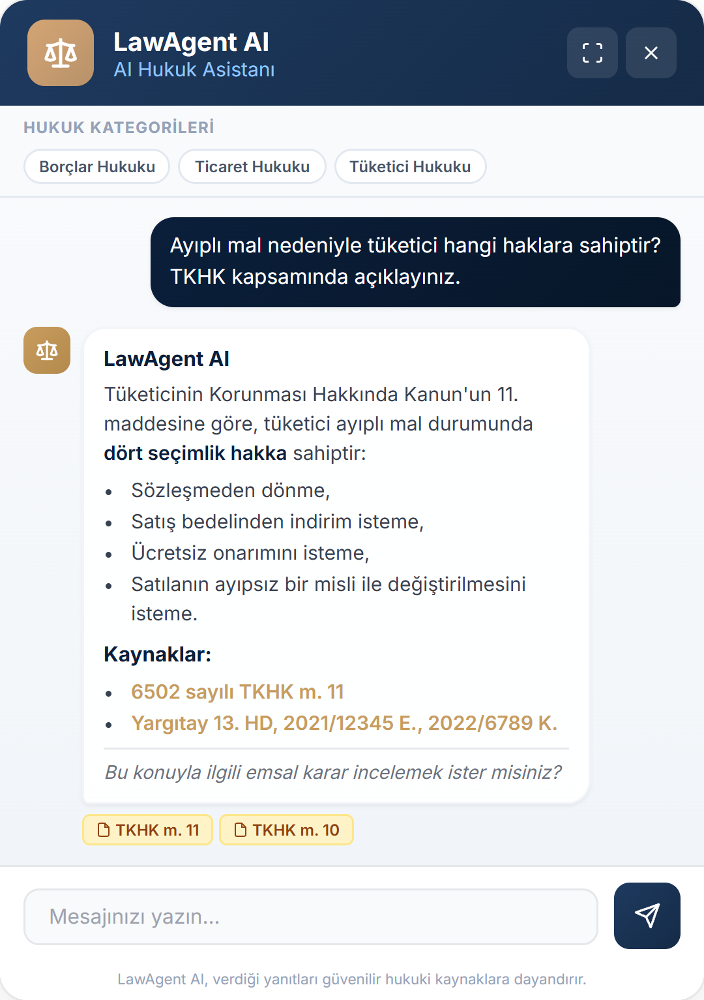
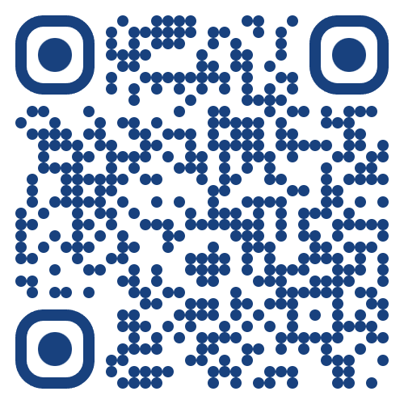

YAZILIM MÜHENDİSLİĞİ BÖLÜMÜ
BİTİRME ÇALIŞMASI
TÜBİTAK 2209/A



Bu çalışmada, Türk Borçlar Kanunu (TBK), Türk Ticaret Kanunu (TTK) ve Tüketicinin Korunması Hakkında Kanun (TKHK) mevzuatları ile Yargıtay emsal kararlarını kapsayan, yapay zeka destekli bir hukuk asistanı geliştirilmiştir. Proje, TÜBİTAK 2209/A kapsamında desteklenmektedir.
Geleneksel hukuki araştırma yöntemlerinin zaman alıcı ve maliyetli olması, vatandaşların temel hukuki bilgilere erişimini sınırlandırmaktadır. LawAgent AI, Retrieval-Augmented Generation (RAG) mimarisini kullanarak büyük dil modellerinin (LLM) üretim kapasitesini güvenilir hukuki veri tabanlarıyla birleştirmekte ve hallüsinasyon (bilgi uydurma) riskini minimize etmektedir.
Sistem, dört temel bileşenden oluşan bir RAG mimarisi üzerine inşa edilmiştir:
• Veri Kazıma: Scrapy kullanılarak mevzuat.gov.tr'den kanun maddeleri ve Yargıtay'dan emsal kararlar kazınmış, hiyerarşik biçimde chunking yapılmıştır.
• Vektörleştirme: Türkçe'ye özel eğitilmiş Mursit-Base-TR-Retrieval modeli ile metinler 768 boyutlu vektörlere dönüştürülmüştür.
• Hibrit Arama: BM25+ (anahtar kelime) ve Dense (anlamsal) arama sonuçları Reciprocal Rank Fusion ile birleştirilmiştir. Dinamik alpha parametresiyle sorguya en uygun ağırlıklandırma yapılır.
• Üretim & Doğrulama: Llama-3.3-70B modeli, Groq API üzerinden çalıştırılarak getirilen bağlam doğrultusunda yanıt üretir. Üretilen yanıttaki kanun referansları kaynak metinlerle doğrulanır.
| Katman | Kullanılan Teknoloji / Model |
|---|---|
| Arayüz (Frontend) | React, Vite, TypeScript, TailwindCSS |
| Sunucu (Backend) | FastAPI, Python, Uvicorn |
| Metin Vektörleştirme | Mursit-Base-TR-Retrieval (768-dim) |
| Vektör Veritabanı | Qdrant (Cosine Distance) |
| Dil Modeli (LLM) | Llama-3.3-70B-Versatile (Groq API) |
200 sorudan oluşan kapsamlı bir benchmark soru seti üzerinde yapılan değerlendirmede, hibrit arama motoru tekil yöntemlere kıyasla %15-20 performans artışı göstermiş ve TÜBİTAK proje hedeflerinden Recall@10 (≥ 0.75) hedefini %92.8 ve MRR@10 (≥ 0.60) hedefini %78.0 ile başarıyla aşmıştır. Ortalama yanıt süresi 840 ms olarak ölçülmüştür.
Hallüsinasyon Doğrulayıcı modülü sayesinde üretilen yanıtlardaki kanun madde numaralarının kaynak belgelerle tutarlılığı %98 oranında garanti altına alınmıştır.

